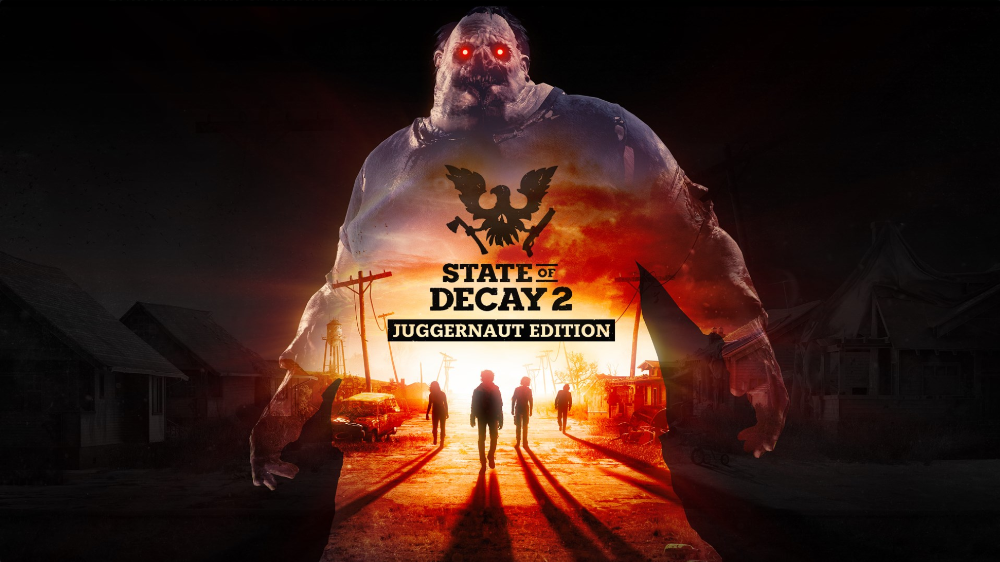
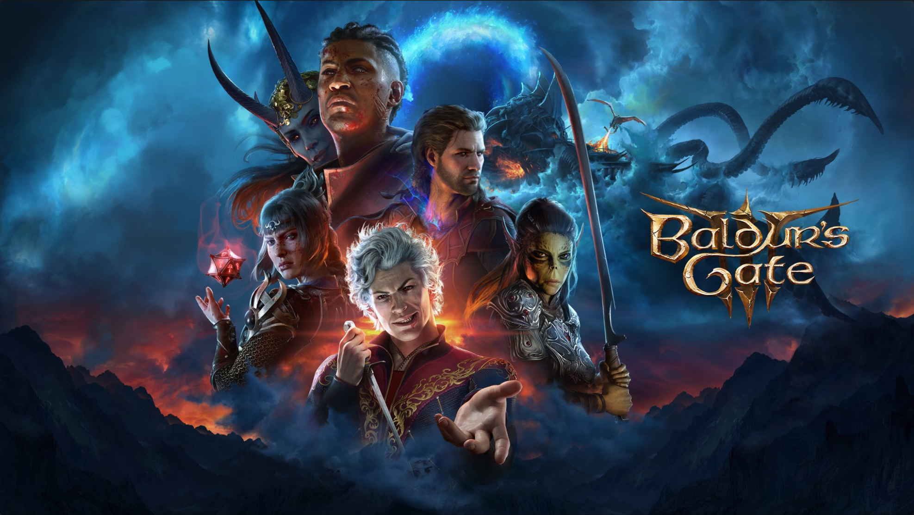
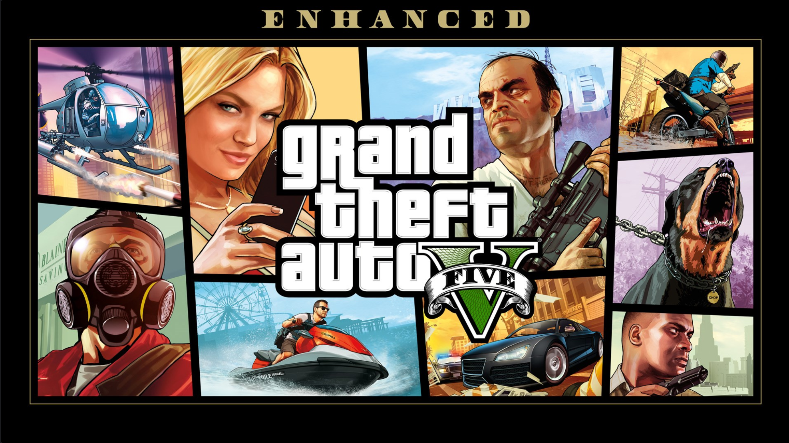

Bienvenidos a Kako Juegos
Explora nuestra selección de videojuegos para PC. Aquí encontrarás títulos de mundo abierto, rol y acción disponibles en las principales plataformas digitales.
Productos destacados
-
State of Decay 2: Juggernaut Edition

Juego de supervivencia sandbox y mundo abierto ambientado en un apocalipsis zombi. Construye tu comunidad y toma decisiones que definen quién sobrevive.
Plataforma: disponible en Xbox Game Pass para PC.
-
Baldur's Gate 3

Videojuego de rol (RPG) con combate por turnos basado en Dungeons & Dragons. Tus elecciones moldean la historia y a tus personajes.
Plataforma: disponible en Steam para PC.
-
Grand Theft Auto V Enhanced

Aventura de acción en el mundo abierto de Los Santos, siguiendo la historia de tres protagonistas conectados por el crimen.
Plataforma: disponible en Epic Games para PC.
Contacto
¿Tienes dudas o quieres comprar? Escríbenos a contacto@kakojuegos.cl.
Síguenos en nuestras redes sociales: